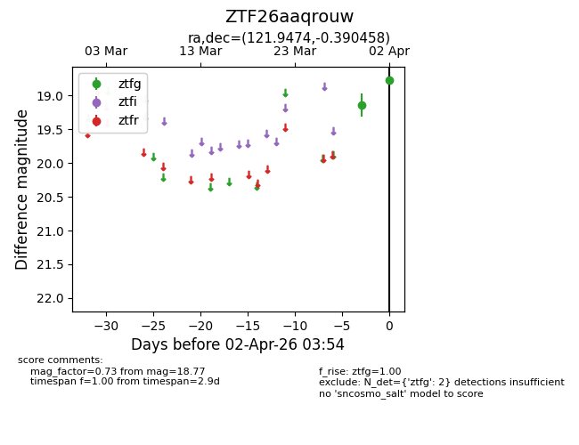
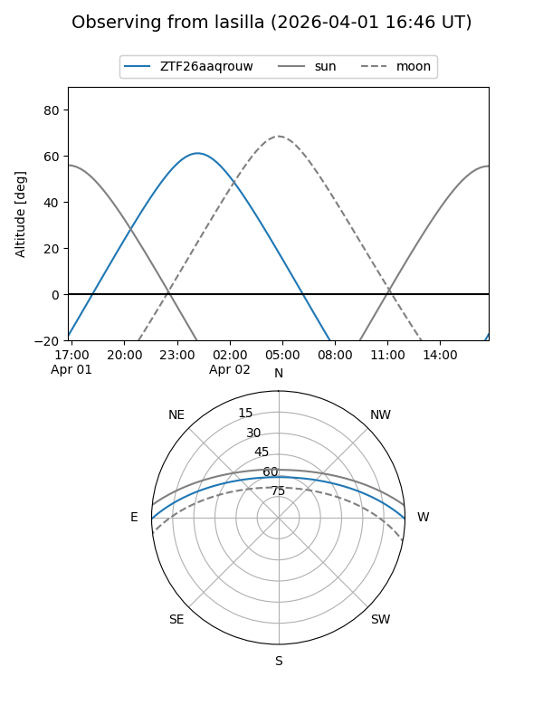
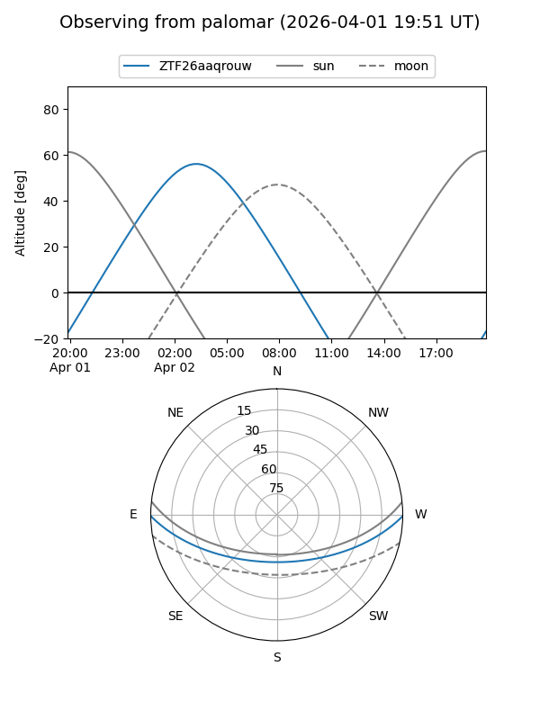

ZTF26aaqrouw
Target ZTF26aaqrouw at 2026-04-02 03:58
Aliases and brokers:
FINK: link
Lasair: link
ALeRCE: link
alt names
ZTF26aaqrouw (ztf,fink_ztf)
Coordinates:
equatorial (ra, dec) = 121.9474,-0.39046
equatorial (HMS+DMS) = 08:07:47.38,-00:23:25.65
galactic (l, b) = (222.2572,+16.73401)
Flags:
Photometry:
last ztfg=18.77
2 ztfg detections
Lightcurve

Visibility


Additional plots